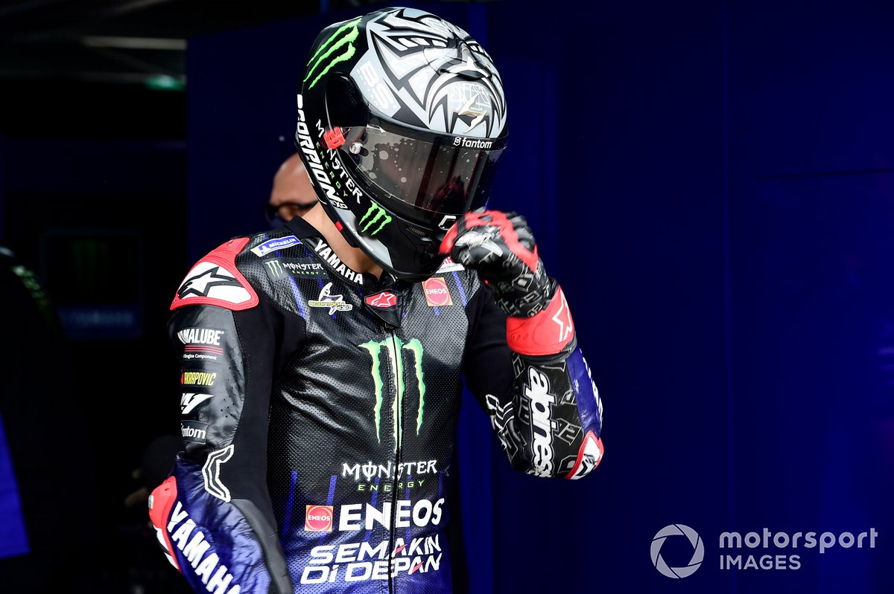
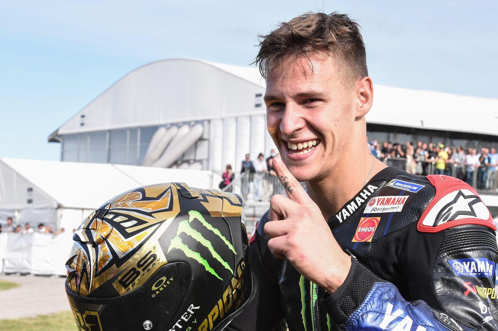
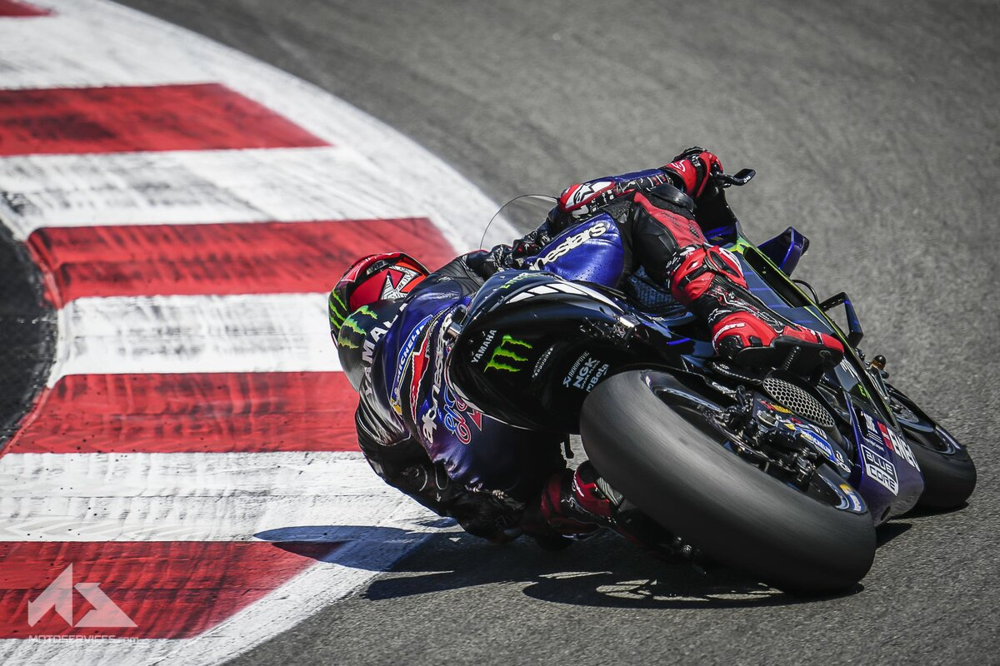
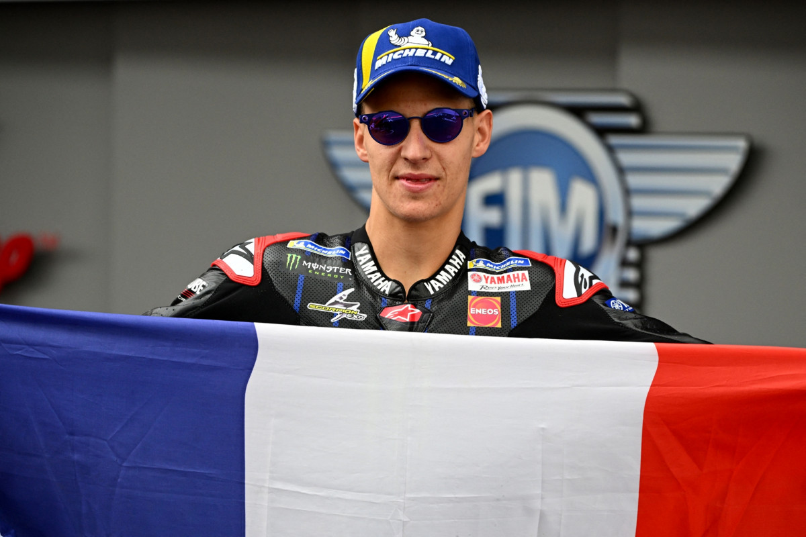

Pays :  Nom : Quartararo
Prenom : Fabio
Date de naissance : 20 / 04 / 1999
Lieu de naissance : Nice (France)
Taille : 1,77cm | Poids : 64Kg
Signe astrologique : Bélier
Signes Particuliers : Tatouages sur tout le corps
Nom : Quartararo
Prenom : Fabio
Date de naissance : 20 / 04 / 1999
Lieu de naissance : Nice (France)
Taille : 1,77cm | Poids : 64Kg
Signe astrologique : Bélier
Signes Particuliers : Tatouages sur tout le corps
Fabio Quartararo a remporté plusieurs titres en 70cc, 80cc et 125cc sur le sol espagnol ; palmarès auquel s’ajoute deux couronnes en FIM CEV Repsol Moto3. Le jeune prodige va justement profiter de ce statut pour faire son arrivée en mondial Moto3™ dès 2015, avant même avoir atteint l’âge minimum de 16 ans. Le représentant du team Estrella Galicia décroche deux seconde places et deux poles au cours d’une saison qu’il finit malheureusement blessé. En 2016, le Niçois délaisse tout compte fait sa Honda pour une KTM du team Leopard Racing, mais la réussite ne sera pas au rendez-vous. En 2017, ce dernier grimpe alors en Moto2™ et empoche, accompagné du team Pons, six Tops 10. Le Français migre ensuite chez Speed Up. De là, un déclic se produira comme en témoigne cette deuxième position à Assen et ce triomphe en Catalogne, qu’il aurait presque pu répéter à Motegi sans une disqualification. En 2019, Fabio Quartararo fait le grand saut en MotoGP™, avec le tout nouveau Petronas Yamaha SRT où il se révèle véritablement, puisque ce sont pas moins de six poles et sept podiums qu’il sera en mesure d’aller chercher. Des résultats qui lui vaudront de terminer meilleur pilote indépendant en parallèle de ce trophée Rookie of the Year. © motogp.com